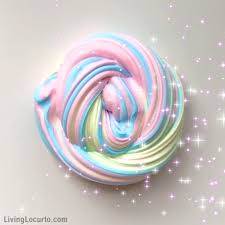
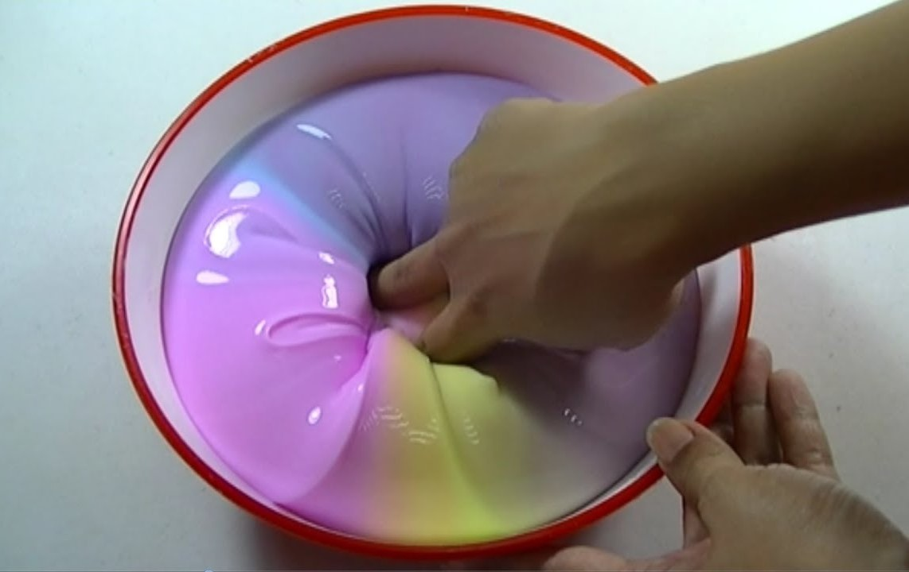
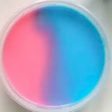
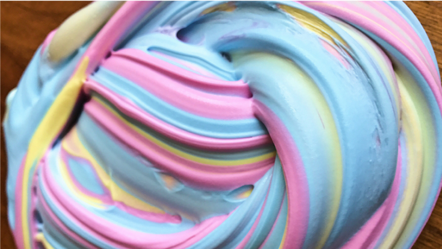

Unicorn slime is satisfying to look at and mixing and playing with it is good. And now let's learn the technique in making unicorn slime.

For fluufy slime and iceberg slime has almost the same procedure in making your slime a unicorn color slime but in jiggly slime has different procedure compare to the fluffy and iceberg slime.

You can lessen the jiggliness of your slime by adding few cups of water at a time.
Waiting for 8 hours or more can make your jiggly slime more stretchy and glossy! And it must be covered with a container and a lid to avoid your jiggly slime to be dried from the air and must store it at a room temperature to avoid melting and separation of the mixture.

